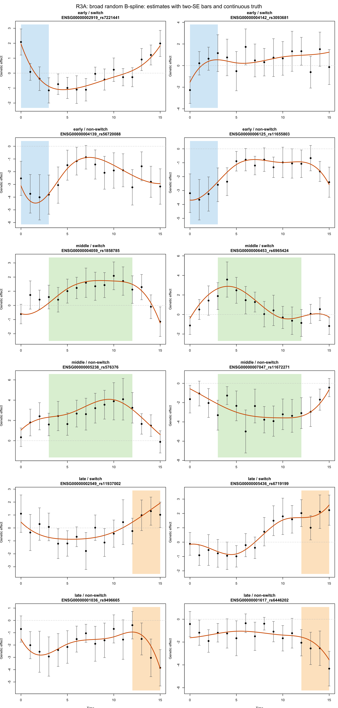
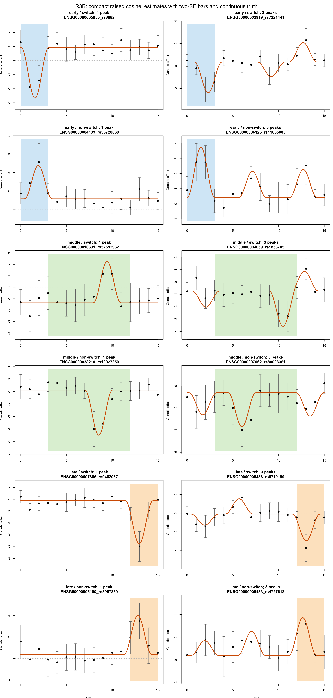
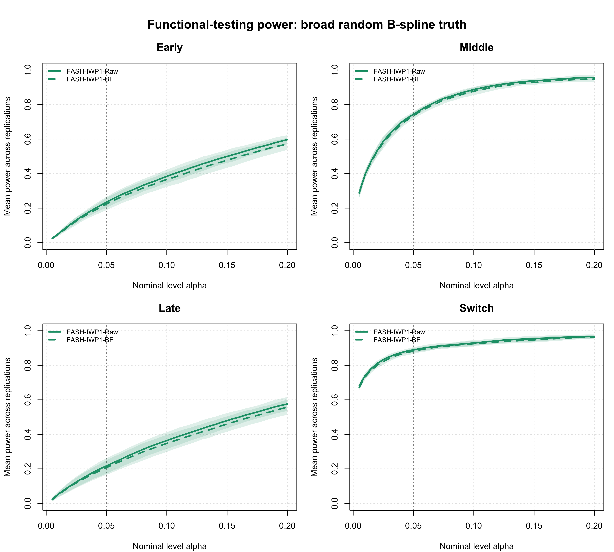
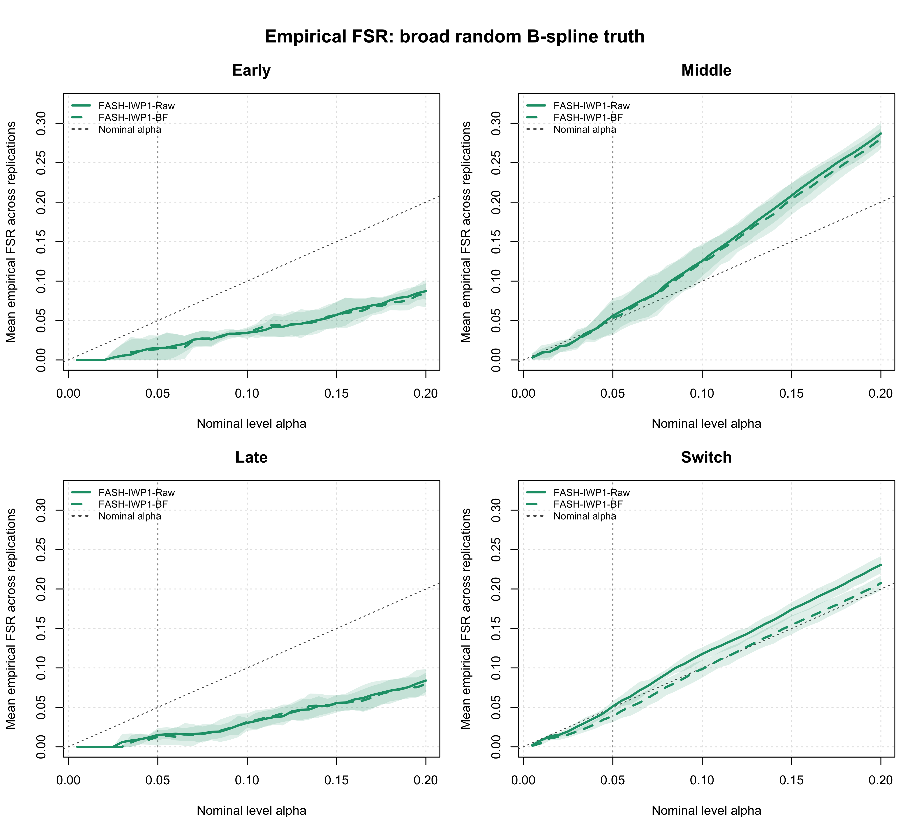
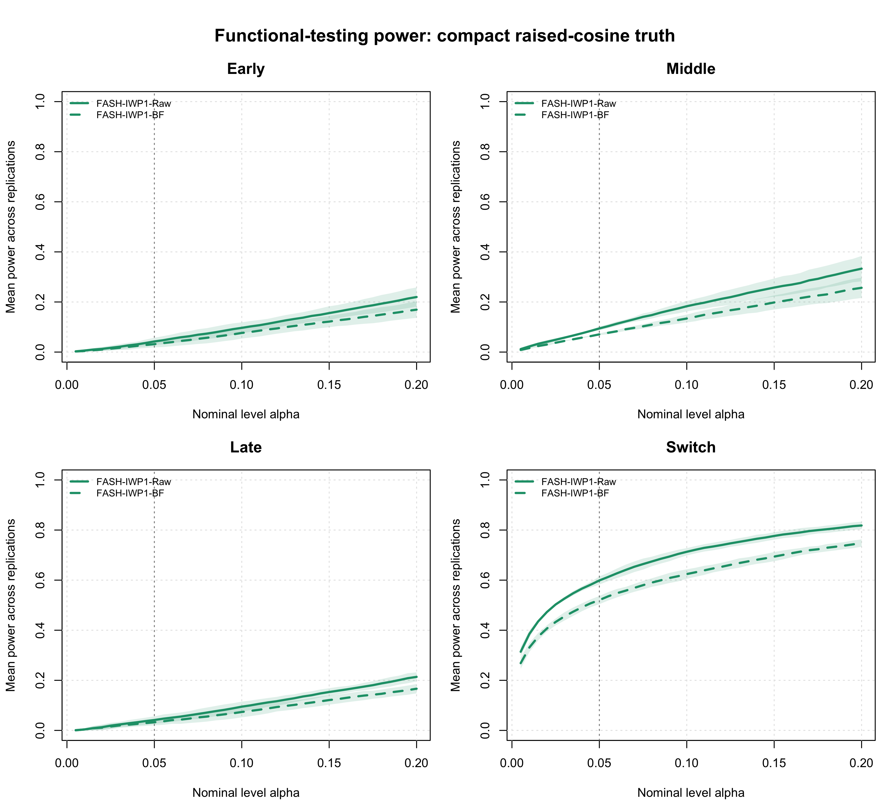
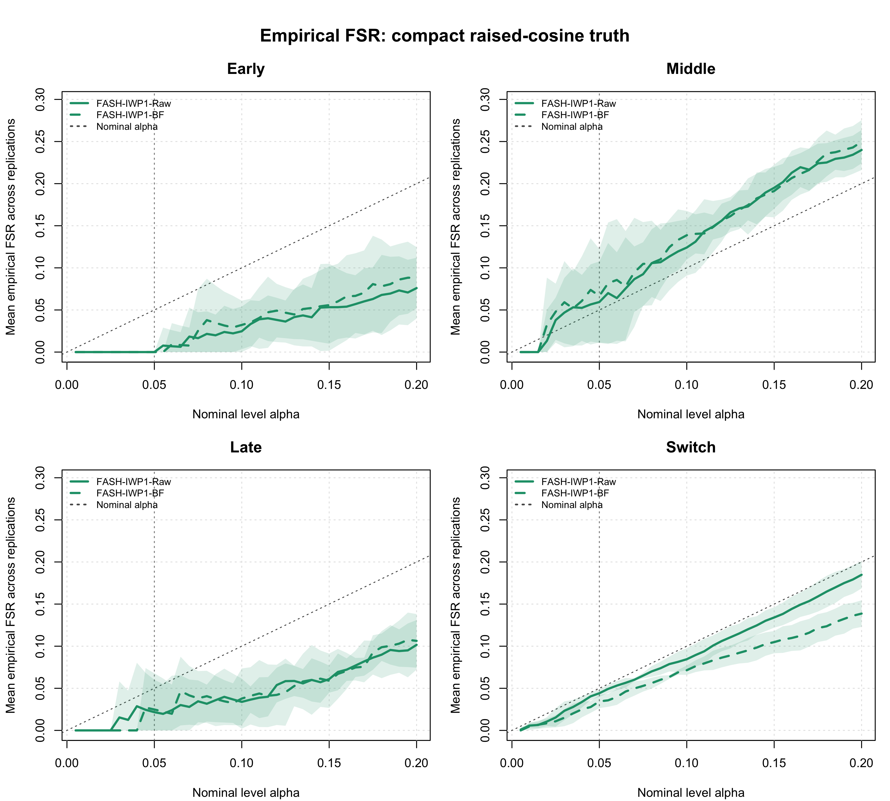

Last updated: 2026-08-23
Checks: 6 1
Knit directory: coderepo-local/
This reproducible R Markdown analysis was created with workflowr (version 1.7.2). The Checks tab describes the reproducibility checks that were applied when the results were created. The Past versions tab lists the development history.
The R Markdown file has unstaged changes. To know which version of
the R Markdown file created these results, you’ll want to first commit
it to the Git repo. If you’re still working on the analysis, you can
ignore this warning. When you’re finished, you can run
wflow_publish to commit the R Markdown file and build the
HTML.
Great job! The global environment was empty. Objects defined in the global environment can affect the analysis in your R Markdown file in unknown ways. For reproduciblity it’s best to always run the code in an empty environment.
The command set.seed(20251109) was run prior to running
the code in the R Markdown file. Setting a seed ensures that any results
that rely on randomness, e.g. subsampling or permutations, are
reproducible.
Great job! Recording the operating system, R version, and package versions is critical for reproducibility.
Nice! There were no cached chunks for this analysis, so you can be confident that you successfully produced the results during this run.
Great job! Using relative paths to the files within your workflowr project makes it easier to run your code on other machines.
Great! You are using Git for version control. Tracking code development and connecting the code version to the results is critical for reproducibility.
The results in this page were generated with repository version c87957a. See the Past versions tab to see a history of the changes made to the R Markdown and HTML files.
Note that you need to be careful to ensure that all relevant files for
the analysis have been committed to Git prior to generating the results
(you can use wflow_publish or
wflow_git_commit). workflowr only checks the R Markdown
file, but you know if there are other scripts or data files that it
depends on. Below is the status of the Git repository when the results
were generated:
Ignored files:
Ignored: .DS_Store
Ignored: .Rhistory
Ignored: .Rproj.user/
Ignored: Rplots.pdf
Ignored: analysis/.DS_Store
Ignored: analysis/.Rhistory
Ignored: code/.DS_Store
Ignored: code/.Rhistory
Ignored: code/revision_simulations/.DS_Store
Ignored: data/appendixB/
Ignored: data/dynamic_eQTL_real/
Ignored: data/revision_simulations/
Ignored: data/toy_example/
Ignored: output/dynamic_eQTL_real/
Ignored: output/pdf/
Ignored: output/playwright/
Ignored: output/revision_simulations/
Untracked files:
Untracked: analysis/dynamic_eQTL_real_cl.rmd
Untracked: analysis/nonlinear_dynamic_eQTL_real_cl.Rmd
Untracked: analysis/revision_enhancer_enrichment_cl.rmd
Untracked: analysis/revision_internal_correlated_permutation_discoveries.rmd
Untracked: analysis/revision_internal_evaluation_grid_mc_sensitivity.rmd
Untracked: analysis/revision_internal_evaluation_grid_mc_sensitivity_middle_4_11.rmd
Untracked: analysis/revision_internal_fash_cl_manuscript_impact.rmd
Untracked: analysis/revision_internal_fash_discovery_variant_count.rmd
Untracked: analysis/revision_internal_fash_linear_real_data_ablation.rmd
Untracked: analysis/revision_internal_fashr_correlated_observation_model.rmd
Untracked: analysis/revision_internal_matched_fash_linear_real_data.rmd
Untracked: analysis/revision_internal_matched_fash_linear_real_data_cl.rmd
Untracked: analysis/revision_internal_r1_normality_assumption.rmd
Untracked: analysis/revision_internal_small_m_clean_working_null_sensitivity.rmd
Untracked: analysis/revision_internal_small_m_matched_null_eb_sensitivity.rmd
Untracked: analysis/revision_internal_twenty_variant_per_gene_refit.rmd
Untracked: apps/
Untracked: code/02_dyn_lfsr.R
Untracked: code/02_dyn_lfsr.sbatch
Untracked: code/revision_simulations/appendix_b/
Untracked: code/revision_simulations/internal/cl_pc_real_data_pages/
Untracked: code/revision_simulations/internal/correlated_permutation_discoveries/
Untracked: code/revision_simulations/internal/covariance_estimation/run_design_propagated_null_correlation.R
Untracked: code/revision_simulations/internal/covariance_estimation/run_multigene_null_beta_covariance_exploration.R
Untracked: code/revision_simulations/internal/early_window_sensitivity/
Untracked: code/revision_simulations/internal/evaluation_grid_sensitivity/
Untracked: code/revision_simulations/internal/fash_cl_manuscript_impact/
Untracked: code/revision_simulations/internal/fash_discovery_variant_count/
Untracked: code/revision_simulations/internal/fash_knockoff/
Untracked: code/revision_simulations/internal/fash_linear_real_data_ablation/
Untracked: code/revision_simulations/internal/fash_strober_enhancer_comparison_cl/
Untracked: code/revision_simulations/internal/matched_fash_linear_real_data/
Untracked: code/revision_simulations/internal/matched_fash_linear_real_data_cl/
Untracked: code/revision_simulations/internal/r0_linear_iwp_power_mechanism/
Untracked: code/revision_simulations/internal/r0_linear_summary_statistic/
Untracked: code/revision_simulations/internal/r1_known_truth_genotype_permutation/
Untracked: code/revision_simulations/internal/r1_linear_truth_composition/
Untracked: code/revision_simulations/internal/r1_normality_assumption/
Untracked: code/revision_simulations/internal/residual_correlation_fash/
Untracked: code/revision_simulations/internal/selected_signal_genotype_permutation/
Untracked: code/revision_simulations/r1_r2_fashr0143/
Untracked: code/revision_simulations/r3_r4_fashr0143/
Untracked: code/revision_simulations/r4_correlated_errors/real_genotype_r1_helpers.R
Untracked: code/revision_simulations/r5_one_variant_per_gene/
Untracked: code/revision_simulations/shared/build_real_genotype_one_per_gene_cache.R
Untracked: code/revision_simulations/shared/real_genotype_one_per_gene.R
Untracked: code/revision_simulations/shared/test_linear_mixture_fash.R
Untracked: code/revision_simulations/shared/test_real_genotype_one_per_gene.R
Untracked: code/revision_simulations/shared/validate_r1_r2_linear_mixture_pairing.R
Untracked: code/revision_simulations/shared/validate_r1_r2_real_genotype_pairing.R
Untracked: figure/
Unstaged changes:
Modified: analysis/appendixB.rmd
Modified: analysis/dynamic_eQTL_real.rmd
Modified: analysis/index.Rmd
Modified: analysis/nonlinear_dynamic_eQTL_real.Rmd
Modified: analysis/revision_balanced_variant_thinning.rmd
Modified: analysis/revision_combined_spiky_genotype_simulation.rmd
Modified: analysis/revision_correlated_error_simulation.rmd
Modified: analysis/revision_enhancer_enrichment.rmd
Modified: analysis/revision_functional_testing_simulation.rmd
Modified: analysis/revision_genotype_level_simulation.rmd
Modified: code/revision_simulations/README.md
Modified: code/revision_simulations/internal/covariance_estimation/run_global_pca_factor_visualization.R
Modified: code/revision_simulations/internal/fash_strober_enhancer_comparison/enrichment_api.R
Modified: code/revision_simulations/internal/fash_strober_enhancer_comparison/reporting.R
Modified: code/revision_simulations/internal/fash_strober_enhancer_comparison/run_fash_strober_enhancer_comparison.R
Modified: code/revision_simulations/r1_random_bspline/reporting.R
Modified: code/revision_simulations/r1_random_bspline/run_random_bspline_mc_replication.R
Modified: code/revision_simulations/r2_spiky_transient/reporting.R
Modified: code/revision_simulations/r2_spiky_transient/run_combined_spiky_genotype_simulation.R
Modified: code/revision_simulations/r2_spiky_transient/run_spiky_transient_mc_replication.R
Modified: code/revision_simulations/r3_functional_testing/reporting.R
Modified: code/revision_simulations/r3_functional_testing/run_matched_functional_testing_mc_replication.R
Modified: code/revision_simulations/r4_correlated_errors/estimate_real_data_error_correlations.R
Modified: code/revision_simulations/r4_correlated_errors/reporting.R
Modified: code/revision_simulations/r4_correlated_errors/run_full_empirical_correlation_mc.R
Modified: code/revision_simulations/r4_correlated_errors/run_lag1_correlation_sweep.R
Modified: code/revision_simulations/shared/simulation_functions.R
Note that any generated files, e.g. HTML, png, CSS, etc., are not included in this status report because it is ok for generated content to have uncommitted changes.
These are the previous versions of the repository in which changes were
made to the R Markdown
(analysis/revision_functional_testing_simulation.rmd) and
HTML (docs/revision_functional_testing_simulation.html)
files. If you’ve configured a remote Git repository (see
?wflow_git_remote), click on the hyperlinks in the table
below to view the files as they were in that past version.
| File | Version | Author | Date | Message |
|---|---|---|---|---|
| Rmd | c87957a | Ziang Zhang | 2026-08-10 | Add revision analyses: R1-R6 reviewer-facing pages and internal studies |
| html | c87957a | Ziang Zhang | 2026-08-10 | Add revision analyses: R1-R6 reviewer-facing pages and internal studies |
This simulation evaluates FASH functional testing after global dynamic-eQTL discovery. It uses two non-IWP truth mechanisms matched on sample size, variant classes, genetic main effects, functional labels, and analysis.
All numerical results on this page come from the completed, versioned
Midway3 cache generated with fashr 0.1.43 at Git SHA
bf223df75da6e41ae48607a56b4cd12d7c3b24e7. Before formatting
any result, the reporting layer requires the completion flag and
manifest, validates the package, result identity, Middle definition, and
genotype provenance, and checks that every seed uses the exact same
gene-variant pairs and canonical genotype content as the formal R1
analysis. The separate local validator also checks every artifact and
source SHA-256 before the page is rebuilt.
For donor \(i\), variant \(j\), and time \(t\),
\[ Y_{ijt} = \alpha_{jt} + G_{ij}\beta_j(t) + X_i^T\gamma_{jt} + \epsilon_{ijt}, \qquad \epsilon_{ijt}\sim N(0,1). \]
The genotype matrix is taken from the real YRI data used in the
manuscript. For each simulation seed, one tested cis variant is sampled
uniformly from each of the 6,362 tested genes, and its
observed dosage vector is retained for the same 19 donors.
A tested variant assigned to multiple genes may therefore appear more
than once. R1, R2, R3A, and R3B use the exact same sampled gene-variant
pairs and genotype matrix for a given seed.
The five columns of \(X\) remain simulated independently from \(N(0,1)\) and are standardized across donors. Independently for each covariate, gene, and time, \(\gamma_{kjt}\sim N(0,0.5^2)\). The current simulation sets \(\alpha_{jt}=0\); each fitted regression still includes an intercept. Effect trajectories, covariates, covariate effects, and expression noise remain simulated.
seed <- 12345
component_seeds <- revision_component_seeds(seed)
genotype_cache <- readRDS(
"output/revision_simulations/shared/real_genotype_one_per_gene_J6362_pilot5/genotype_samples.rds"
)
genotype_sample <- genotype_cache$samples[[as.character(seed)]]
G <- genotype_sample$G
covariates <- simulate_covariate_matrix(
n_donors = 19,
n_covariates = 5,
seed = component_seeds[["covariates"]]
)knitr::kable(
genotype_sampling_table,
align = "l",
caption = paste(
"Table 1. Per-seed genotype sampling summary. Repeated assignments",
"refer to the same tested variant selected for more than one gene."
)
)| Seed | Genes | Unique rsIDs | Repeated cross-gene assignments | MAF range | Median MAF |
|---|---|---|---|---|---|
| 12345 | 6,362 | 6,345 | 17 | 0.101-0.500 | 0.254 |
| 22345 | 6,362 | 6,342 | 20 | 0.100-0.500 | 0.243 |
| 32345 | 6,362 | 6,338 | 24 | 0.100-0.500 | 0.251 |
| 42345 | 6,362 | 6,333 | 29 | 0.100-0.500 | 0.239 |
| 52345 | 6,362 | 6,338 | 24 | 0.100-0.500 | 0.257 |
Each replicate contains 19 donors, 16 time
points, five PC-like covariates, 1,272 dynamic eQTLs,
2,545 constant eQTLs, and 2,545 zero-effect
units. Truth classes are assigned within empirical-MAF deciles so that
the dynamic, constant, and zero-effect groups have closely matched MAF
distributions.
knitr::kable(
truth_maf_balance_table,
align = "l",
caption = "Table 2. Empirical MAF balance across truth classes over five simulation seeds."
)| Truth class | Units per seed | Mean MAF across seeds | Maximum absolute MAF SMD |
|---|---|---|---|
| Dynamic | 1,272 | 0.270 | 0.001 |
| Constant | 2,545 | 0.270 | 0.003 |
| Zero | 2,545 | 0.270 | 0.003 |
For every dynamic candidate,
\[ \beta_j(t)=\mu_j+h_j(t), \qquad \mu_j\sim N(0,1). \]
The 1,272 dynamic eQTLs are divided exactly across six
preassigned truth cells (212 per cell): early, middle, or
late crossed with switch or non-switch. Each candidate draws a new \(\mu_j\) from \(N(0,1)\); rejection sampling retains it
only when the final trajectory \(\mu_j+h_j(t)\) satisfies its assigned
cell.
The deviation \(h_j(t)\) is a cubic
B-spline with six iid \(N(0,1)\)
coefficients. It is centered over the 16 observed times and scaled to
maximum absolute value 2 before adding \(\mu_j\).
The deviation \(h_j(t)\) contains
one, two, or three compact raised-cosine peaks with half-width
1.5. Primary peak centers are sampled from
1.5–2.5 for Early,
4.5–10.5 for Middle, and
12.5–13.5 for Late. Secondary peak centers use
the same three aligned ranges, their amplitudes are random, and the
deviation is scaled to centered RMS 0.9 before adding \(\mu_j\). These ranges prevent a full
raised-cosine peak from straddling a revised timing boundary solely
because its center was sampled too close to that boundary.
Early, middle, and late use the same max-contrast functionals as the
manuscript, with the revised temporal partition defined exactly as Early
\(t\leq 3\), Middle \(3<t<12\), and Late \(t\geq 12\). On the dense evaluation grid
seq(0, 15, by = 0.1), the Middle functional therefore uses
the 89 points from 3.1 through 11.9; times
3 and 12 belong only to Early and Late,
respectively. The target contrast must be at least 0.1, and
the two non-target contrasts must be at most -0.1.
For the switch threshold \(c=0.25\),
\[ T_{\mathrm{switch}}\{\beta\} = \min\left[ \max_t\{\beta(t):\beta(t)>0\}, \max_t\{|\beta(t)|:\beta(t)<0\} \right]-c. \]
A switch truth must have \(T_{\mathrm{switch}}\geq 0.1\);
equivalently, it has both a positive and a negative effect of magnitude
at least 0.35. A non-switch truth remains the same sign
over the full dense grid. Writing \(R_j=\max_t\beta_j(t)-\min_t\beta_j(t)\),
its clearance from zero must satisfy
\[ \min_t|\beta_j(t)|\geq\max(0.1,\,0.1R_j). \]
Thus, a larger-amplitude non-switch curve must remain proportionally farther from zero. These margins make the simulation labels unambiguous.
truth_mechanism <- "random_bspline" # Use "raised_cosine" for R3B.
scenario <- paste0(
if (truth_mechanism == "random_bspline") "r3a_" else "r3b_",
"real_genotype_one_per_gene_matched_functional_",
"open_middle_3_12_",
truth_mechanism,
"_relative_clearance_main_effect"
)
time_grid <- 0:15
evaluation_grid <- seq(0, 15, by = 0.1)
class_probs <- c(
dynamic_bspline = 0.20,
constant = 0.40,
zero = 0.40
)
effect_sim <- simulate_matched_functional_effect_set(
n_variants = 6362,
truth_mechanism = truth_mechanism,
time_grid = time_grid,
evaluation_grid = evaluation_grid,
class_probs = class_probs,
dynamic_main_effect_sd = 1,
constant_sd = 1,
bspline_amplitude = 2,
bspline_df = 6,
bspline_coefficient_sd = 1,
cosine_width_half = 1.5,
cosine_spike_counts = 1:3,
cosine_relative_amplitude_range = c(0.35, 0.75),
cosine_target_centered_rms = 0.9,
switch_threshold = 0.25,
middle_window = c(3, 12),
middle_boundary = "open",
location_truth_margin = 0.10,
switch_truth_margin = 0.10,
non_switch_min_abs = 0.10,
non_switch_min_range_fraction = 0.10,
exact_class_counts = TRUE,
seed = seed,
class_seed = component_seeds[["classes"]],
constant_seed = component_seeds[["constant_effects"]],
shape_seed = component_seeds[["functional_truth"]],
scenario = scenario
)
effect_sim <- reassign_effect_simulation_by_maf(
effect_sim = effect_sim,
maf = genotype_sample$variant_info$observed_maf,
class_probs = class_probs,
seed = component_seeds[["classes"]],
n_strata = 10L
)
expression_sim <- simulate_eqtl_expression_from_genotypes(
G = G,
beta_matrix = effect_sim$beta_matrix,
time_grid = time_grid,
covariates = covariates,
expression_noise_sd = 1,
covariate_effect_sd = 0.5,
intercept_sd = 0,
seed = component_seeds[["expression"]]
)At each observed time, the genetic effect and standard error are
estimated from Y ~ G + PC1 + PC2 + PC3 + PC4 + PC5. The
t-statistic correction uses df = 19 - 7 = 12; FASH is fit
to these estimates and corrected standard errors.
Two examples are shown for each of the six functional truth cells. Points and bars are the per-time estimates and two corrected standard errors used by FASH; orange lines are the continuous truths. Shading marks the target timing window.
plot_truth_examples(
example_curves$random_bspline,
mechanism_labels[["random_bspline"]]
)
Figure 1. Representative broad random B-spline truth curves for each functional target and timing cell. Points and bars show estimated effects and two corrected standard errors, orange lines are continuous truths, and shading marks the target timing window.
| Version | Author | Date |
|---|---|---|
| c87957a | Ziang Zhang | 2026-08-10 |
plot_truth_examples(
example_curves$raised_cosine,
mechanism_labels[["raised_cosine"]]
)
Figure 2. Representative compact raised-cosine truth curves for each functional target and timing cell. Points and bars show estimated effects and two corrected standard errors, orange lines are continuous truths, and shading marks the target timing window.
| Version | Author | Date |
|---|---|---|
| c87957a | Ziang Zhang | 2026-08-10 |
At each nominal level \(\alpha\),
the same procedure is applied to FASH-IWP1-Raw and
FASH-IWP1-BF:
Power is the fraction of true positive functionals that are called. Empirical FSR is the fraction of functional calls whose known true functional is non-positive. The figures report five-seed Monte Carlo means and 95% t-based intervals across the full alpha grid.
out <- run_genotype_level_dynamic_eqtl_simulation(
G = G,
time_grid = time_grid,
covariates = covariates,
class_probs = class_probs,
expression_noise_sd = 1,
covariate_effect_sd = 0.5,
intercept_sd = 0,
dynamic_main_effect_sd = 1,
alpha = 0.05,
seed = seed,
num_cores = 4,
num_basis = 20,
scenario = scenario,
save_outputs = FALSE,
effect_sim = effect_sim,
expression_sim = expression_sim
)
true_functionals <- effect_sim$true_functionals[
, c("early", "middle", "late", "switch"), drop = FALSE
]
true_dynamic <- out$unit_info$effect_class == "dynamic_bspline"
raw_results <- evaluate_fash_functional_testing(
fit = out$fash_fits$fash_iwp1_raw,
true_functionals = true_functionals,
evaluation_grid = evaluation_grid,
alpha_grid = seq(0.005, 0.20, by = 0.005),
method = "FASH-IWP1-Raw",
switch_threshold = 0.25,
middle_window = c(3, 12),
middle_boundary = "open",
true_dynamic = true_dynamic,
num_cores = 4,
seed = component_seeds[["functional_posterior"]]
)
bf_results <- evaluate_fash_functional_testing(
fit = out$fash_fits$fash_iwp1_bf,
true_functionals = true_functionals,
evaluation_grid = evaluation_grid,
alpha_grid = seq(0.005, 0.20, by = 0.005),
method = "FASH-IWP1-BF",
switch_threshold = 0.25,
middle_window = c(3, 12),
middle_boundary = "open",
true_dynamic = true_dynamic,
num_cores = 4,
seed = component_seeds[["functional_posterior"]] + 100L
)knitr::kable(
r3a_table,
align = "l",
caption = paste(
"Table 3. Functional-testing power and empirical false sign rate at",
"alpha 0.05 under broad random B-spline truth."
)
)| Target | Method | Mean calls | Power (95% MC CI) | Empirical FSR (95% MC CI) |
|---|---|---|---|---|
| Early | FASH-IWP1-Raw | 100.8 | 0.234 [0.202, 0.265] | 0.015 [0.000, 0.031] |
| Early | FASH-IWP1-BF | 96.0 | 0.223 [0.189, 0.258] | 0.014 [0.000, 0.030] |
| Middle | FASH-IWP1-Raw | 334.0 | 0.743 [0.727, 0.760] | 0.056 [0.034, 0.078] |
| Middle | FASH-IWP1-BF | 329.2 | 0.735 [0.714, 0.756] | 0.053 [0.032, 0.075] |
| Late | FASH-IWP1-Raw | 93.4 | 0.217 [0.172, 0.262] | 0.015 [0.009, 0.021] |
| Late | FASH-IWP1-BF | 89.0 | 0.207 [0.165, 0.249] | 0.013 [0.002, 0.024] |
| Switch | FASH-IWP1-Raw | 596.0 | 0.889 [0.873, 0.905] | 0.051 [0.045, 0.058] |
| Switch | FASH-IWP1-BF | 584.4 | 0.883 [0.866, 0.900] | 0.039 [0.031, 0.047] |
plot_mc_functional_curve_grid(
mc_curve = r3a_alpha,
metric = "power",
title = "Functional-testing power: broad random B-spline truth"
)
Figure 3. Monte Carlo functional-testing power under broad random B-spline truth. Panels identify early, middle, late, and switch targets; curves identify raw and BF-updated FASH in the in-figure legend, with 95% intervals across five seeds.
| Version | Author | Date |
|---|---|---|
| c87957a | Ziang Zhang | 2026-08-10 |
plot_mc_functional_curve_grid(
mc_curve = r3a_alpha,
metric = "empirical_fsr",
title = "Empirical FSR: broad random B-spline truth"
)
Figure 4. Monte Carlo empirical false sign rate under broad random B-spline truth. Panels identify functional targets, curves identify raw and BF-updated FASH, and the diagonal reference denotes nominal alpha.
| Version | Author | Date |
|---|---|---|
| c87957a | Ziang Zhang | 2026-08-10 |
knitr::kable(
r3b_table,
align = "l",
caption = paste(
"Table 4. Functional-testing power and empirical false sign rate at",
"alpha 0.05 under compact raised-cosine truth."
)
)| Target | Method | Mean calls | Power (95% MC CI) | Empirical FSR (95% MC CI) |
|---|---|---|---|---|
| Early | FASH-IWP1-Raw | 18.0 | 0.042 [0.028, 0.057] | 0.000 [0.000, 0.000] |
| Early | FASH-IWP1-BF | 13.4 | 0.032 [0.019, 0.044] | 0.000 [0.000, 0.000] |
| Middle | FASH-IWP1-Raw | 42.6 | 0.094 [0.087, 0.102] | 0.059 [0.011, 0.108] |
| Middle | FASH-IWP1-BF | 32.2 | 0.071 [0.067, 0.074] | 0.067 [0.011, 0.123] |
| Late | FASH-IWP1-Raw | 18.0 | 0.042 [0.027, 0.056] | 0.022 [0.000, 0.060] |
| Late | FASH-IWP1-BF | 14.2 | 0.033 [0.020, 0.045] | 0.025 [0.000, 0.068] |
| Switch | FASH-IWP1-Raw | 398.4 | 0.599 [0.583, 0.615] | 0.044 [0.040, 0.049] |
| Switch | FASH-IWP1-BF | 342.8 | 0.520 [0.504, 0.537] | 0.034 [0.026, 0.042] |
plot_mc_functional_curve_grid(
mc_curve = r3b_alpha,
metric = "power",
title = "Functional-testing power: compact raised-cosine truth"
)
Figure 5. Monte Carlo functional-testing power under compact raised-cosine truth. Panels identify early, middle, late, and switch targets; curves identify raw and BF-updated FASH in the in-figure legend, with 95% intervals across five seeds.
| Version | Author | Date |
|---|---|---|
| c87957a | Ziang Zhang | 2026-08-10 |
plot_mc_functional_curve_grid(
mc_curve = r3b_alpha,
metric = "empirical_fsr",
title = "Empirical FSR: compact raised-cosine truth"
)
Figure 6. Monte Carlo empirical false sign rate under compact raised-cosine truth. Panels identify functional targets, curves identify raw and BF-updated FASH, and the diagonal reference denotes nominal alpha.
| Version | Author | Date |
|---|---|---|
| c87957a | Ziang Zhang | 2026-08-10 |
formal_class_counts <- c(dynamic = 1272L, constant = 2545L, zero = 2545L)
formal_true_pi0 <- sum(formal_class_counts[c("constant", "zero")]) /
sum(formal_class_counts)The exact first-stage dynamic-null proportion is \(\pi_0=5090/6362\approx\) 0.8001. The table reports the fitted constant-component weights for the raw and BF-adjusted IWP fits.
knitr::kable(
pi0_table,
align = "l",
caption = paste(
"Table 5. Estimated first-stage dynamic-null proportions for raw and",
"BF-updated IWP FASH under both functional truth mechanisms."
)
)| Mechanism | Fit | Mean estimated pi0 (95% MC CI) |
|---|---|---|
| R3A: broad random B-spline | Raw | 0.757 [0.713, 0.801] |
| R3A: broad random B-spline | BF-corrected | 0.847 [0.845, 0.849] |
| R3B: compact raised cosine | Raw | 0.732 [0.700, 0.765] |
| R3B: compact raised cosine | BF-corrected | 0.911 [0.908, 0.914] |
For R3A, BF-updated FASH has mean empirical FSR 0.053 or lower for all four targets at \(\alpha=0.05\). Its switch power is 0.883.
For the more localized R3B trajectories, BF-updated FASH has low timing power: 0.032, 0.071, and 0.033 for early, middle, and late, respectively. Early has no false timing calls; late and middle have mean empirical FSR 0.025 and 0.067, respectively. Its switch power is 0.520, but its mean switch FSR is 0.034 at nominal \(\alpha=0.05\). In this five-seed pilot, the scale-relative clearance condition separates switch and non-switch truths in both mechanisms without removing the compact transient behavior. Aligning the compact-peak proposal with the revised timing windows removes the suspected boundary-straddling construction, but it does not improve the R3B Middle result: the mean empirical FSR is still above the nominal level in this run. The proposal change is therefore a diagnostic clarification, not evidence that the Middle calibration issue has been repaired. These results support functional testing for the stated margin-separated designs; they do not imply that BF adjustment alone guarantees FSR control for every functional hypothesis or every truth geometry.
The R3 simulation driver uses the shared simulation functions. Real-genotype selection, dosage extraction, validation, and MAF-balanced truth assignment use the shared real-genotype helper and shared cache builder. The page-specific cache validation and formatting are in R3 reporting code. The formal center-aligned fashr 0.1.43 entry point pins the package commit, source hashes, five-seed genotype cache, design, and output ID. It resumes valid seed-level work in a partial directory and only promotes a cache after all ten mechanism-by-seed replicates pass its final contract. On the staged Midway3 workspace, the exact entry point is:
sbatch slurm/16_r3_center_aligned_fashr0143.sbatchThe downloaded cache and its exact R1 pairing can be rechecked locally with:
Rscript --vanilla \
code/revision_simulations/r3_r4_fashr0143/validate_downloaded_r3_r4_fashr0143.RThese expensive commands are intentionally not evaluated during workflowr builds; all tables and figures above read the validated saved cache.
Cached replicate metrics, call-level diagnostics, examples, summaries, and figures are stored under:
output/revision_simulations/mc/r3_real_genotype_one_per_gene_J6362_matched_functional_open_middle_3_12_center_aligned_relative_clearance_main_effect_fashr0143_pilot5/
sessionInfo()R version 4.5.1 (2025-06-13)
Platform: aarch64-apple-darwin20
Running under: macOS Sequoia 15.6.1
Matrix products: default
BLAS: /System/Library/Frameworks/Accelerate.framework/Versions/A/Frameworks/vecLib.framework/Versions/A/libBLAS.dylib
LAPACK: /Library/Frameworks/R.framework/Versions/4.5-arm64/Resources/lib/libRlapack.dylib; LAPACK version 3.12.1
locale:
[1] C.UTF-8/C.UTF-8/C.UTF-8/C/C.UTF-8/C.UTF-8
time zone: America/Chicago
tzcode source: internal
attached base packages:
[1] stats graphics grDevices utils datasets methods base
other attached packages:
[1] workflowr_1.7.2
loaded via a namespace (and not attached):
[1] vctrs_0.7.3 httr_1.4.7 cli_3.6.6 knitr_1.50
[5] rlang_1.2.0 xfun_0.55 stringi_1.8.9 otel_0.2.0
[9] processx_3.8.6 promises_1.5.0 jsonlite_2.0.0 glue_1.8.1
[13] rprojroot_2.1.1 git2r_0.36.2 htmltools_0.5.9 httpuv_1.6.16
[17] ps_1.9.1 sass_0.4.10 rmarkdown_2.30 jquerylib_0.1.4
[21] tibble_3.3.0 evaluate_1.0.5 fastmap_1.2.0 yaml_2.3.12
[25] lifecycle_1.0.5 whisker_0.4.1 stringr_1.6.0 compiler_4.5.1
[29] fs_1.6.6 pkgconfig_2.0.3 Rcpp_1.1.1-1.1 rstudioapi_0.17.1
[33] later_1.4.4 digest_0.6.39 R6_2.6.1 pillar_1.11.1
[37] callr_3.7.6 magrittr_2.0.5 bslib_0.9.0 tools_4.5.1
[41] cachem_1.1.0 getPass_0.2-4